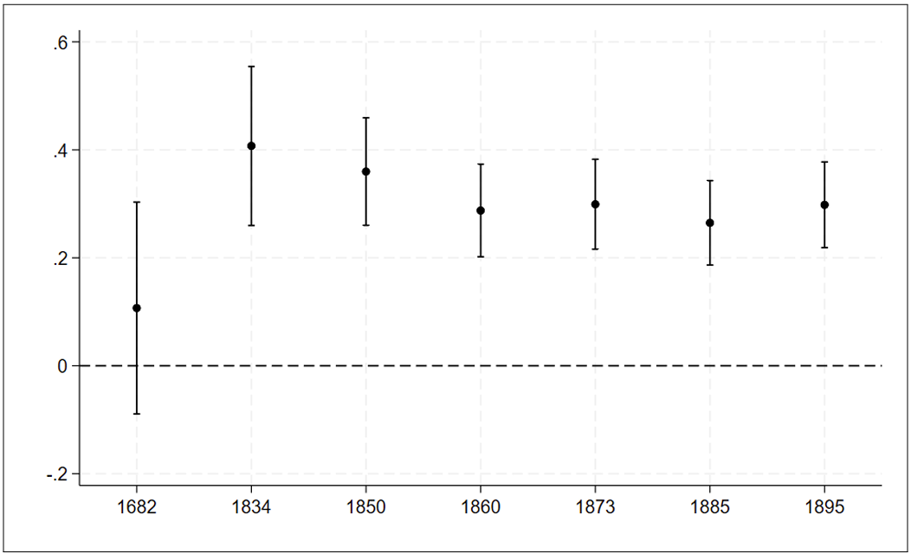
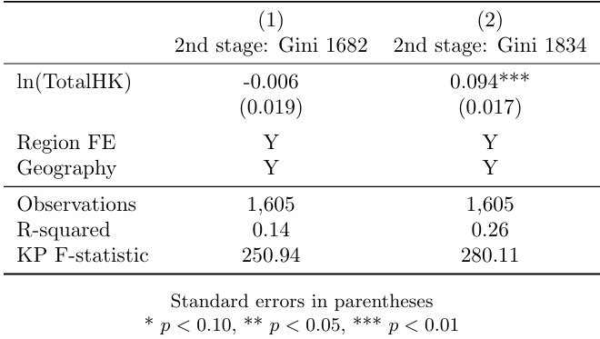

3.1 Winners and losers from Agrarian Reform: Evidence from Danish land inequality 1682–1895
Boberg-Fazlić, N., Lampe, M., Lasheras, P. M., & Sharp, P. (2022). Winners and losers from Agrarian Reform: Evidence from Danish land inequality 1682–1895. Journal of Development Economics, 155, 102813
Highlights
The paper examines the distributional effects of land reforms between 1682-1895 in Denmark
The authors use an Instrumental Variable (IV) to deal with endogeneity issues stemming from reverse causality between the variable of interest (land productivity) and the dependent variable (land inequalities).
This methodology is standard by the choice of a geological instrument. It follows the usual steps of the IV procedure, including tests of the instrument’s pertinence (F-statistic of the 1st stage estimation).
Our added value to the original replication package lies in the detailed explanation of the provided code. Additionally, we demonstrate how to extract various tables and figures directly from the Stata code. While the authors have created a well-realized replication package, our contribution enhances its accessibility and usability.
We make use of these Stata tricks:
Diagnostic Statistics: We leverage the
estat firststagecommand to obtain diagnostic statistics pertaining to the first-stage of instrumental variable estimation, which includes extracting and storing the F-statistics for further analysis.Looping: The
foreachloop structure is used, which enables the iteration over multiple years for instrumental variable regressions and allows to avoid repetitive commands in the code.Advanced Formatting: Through the utilization of the
esttabcommand along with various formatting options, we create well-formatted tables, which results in the production of tables that are not only clear and organized but also visually appealing.
Link to the paper: https://osf.io/jmn5y/?view_only=f18f6d51efe44f04abef6e9042c0163c
Link to the replication package: https://doi.org/10.1016/j.jdeveco.2021.102813
3.1.1 Introduction
As a rule, agrarian reforms are viewed as fundamental for economic development, allowing, on one hand, to fuel agricultural productivity and on the other, to reallocate the necessary productive resources to industrialization. Their design has to fulfill two competing objectives: stimulating farms’ productivity and ensuring an equitable access to land. As numerous reforms have been criticized for failing the latter, this paper provides the first quantitative long-term assessment of the Danish agrarian reforms’ effects on both economic efficiency and land inequalities. Rather efficiency-oriented, these reforms were designed to support the owners of medium-sized farmers and were therefore detrimental to smallholders and landless agricultural laborers. As land inequalities became more stringent in the most fertile areas, the objective of the paper is to find the underlying mechanisms of these patterns and more specifically, the role of agrarian reforms in this context.
To do so, the authors combine several sources of historical data on farms at the parish level with population and agricultural censuses to cover the 1682- 1895 period and enhance the robustness and depth of their analysis. The utilization of a singular, extensive dataset allows for a thorough examination of long-term land inequality trends and patterns, including nuances and variations that might be overlooked in studies with more limited or less comprehensive datasets. The authors’ access to a unique dataset positions their study as a valuable contribution to the literature on historical agrarian economies, providing nuanced perspectives that contribute to a broader understanding of the subject matter. The authors opted for the use of the Theil index to measure land inequality due to its analytically desirable properties. One key advantage is that the Theil index adheres to the principle of transfers, ensuring that a redistribution from one individual to a less affluent one results in a proportional decline in the Theil index, which is particularly convenient for focusing on changes in inequalities over time. Moreover, the Theil index provides unambiguous rankings of distributions, ensuring that two regions with identical Theil indices exhibit identical income distributions. This is not guaranteed by other common measures such as the Gini index. The preference for the Theil index would allow for a higher precision and interpretability of their findings.
From an econometric point of view, the most obvious approach would be to regress changes in parish-level land inequalities on a measure of soil productivity – Total HK, translated as “barrels of hard grain” – and some geographical characteristics of the parish, as well as regional fixed effects. Nonetheless, such a specification would be exposed to endogeneity issues, due to the reverse causality between the explained variable (evolution in land inequalities) and the variable of interest (land productivity): as higher agricultural productivity leads to Malthusian dynamics, in parishes with more fertile soils, there would be more smallholders and landless individuals, whose socio-economic status would be deteriorated by the reforms. Consequently, areas with a higher agricultural productivity were more exposed to rises in land inequalities. At the same time, population growth has beneficial effects on innovation and thus, agricultural productivity. To tackle this, the authors adopt an IV strategy and choose as an instrument for land productivity the distribution of “Boulder Clay”, the sediment type most adapted to barley, resulting from the Weichselian glaciation. Geological variables are generally viewed as reliable instruments, since they capture long-term determinants of development that are independent from human factors.
3.1.2 Identification strategy
When deciding to use a 2SLS strategy, several points need to be discussed in order to allow the identification of robust causal effects. The first hypothesis to be considered and which cannot be tested statistically is the exclusion restriction. It is necessary to rule out any direct effect of the instrument (boulder-clay) on the dependent variable (land inequalities). In this specific case, it can be assumed that soil composition doesn’t directly affect the level of land inequalities. In fact, the authors argue that the rise of inequalities is driven by a stronger demographic growth, due to the productive capacity of the land. This implies, beside the soil fertility, adequate land management practices and efficient agricultural technologies. The authors also have to exclude any effect of the dependent variable on the instrument. Here, once again, land inequalities and the soil fertility seem to be unrelated, as the soil’s share of boulder clay stems from the Weichselian glaciation, which occurred approximately 18,000 years ago. Moreover, the sediment classification they use was made below the impact area of cultivation practices and technologies, which allows to infirm a potential effect of inequalities on this measure of land fertility.
The second hypothesis to be respected is the instrument’s relevance.
The authors need to convincingly describe how the instrument affects the
endogenous variable. In our case, the soil composition represents a key
determinant of the land’s productivity and thus is supposed to be
positively correlated with the total production of an area measured by
the variable TotalHK. Unlike the aforementioned exclusion restriction,
this assumption can be tested statistically. It can be done, for
instance, by verifying whether after estimating the first-stage
specification (1), the coefficient of the instrumental variable is
statistically significant or whether the F-statistic is superior to the
conventionally fixed value of 10.
\[\begin{equation} \tag{1} ln(TotalHK)_{p}=α_{0}+βBoulderClay_{p}+λ_{r}+X_{p}γ+ϵ_{p} \end{equation}\]
As we can see in column 2 of Table 1, the effect of the soil composition
on total production is statistically significant at 1% level. Also, the
value of the F-statistic is equal to 280. Hence, we can conclude that
both steps necessary to ensure the relevance and the exogeneity of the
instrument have been fulfilled. That said, they further estimate the
second-stage specification (2).
\[\begin{equation} \tag{2} ΔTheil_{p}=α_{0}+β\widehat{ln(TotalHK)}_{p}+λ_{r}+X_{p}γ+ϵ_{p} \end{equation}\]
After estimating both the OLS and the second-stage IV specifications, the authors find statistically significant positive effects of land productivity on land inequalities during the agrarian reforms. To ascertain the robustness of these findings, they estimate additional specifications, using alternative measures of land inequalities – such as Gini index, an alternative to the Theil index – and of land productivity – the amount of barley paid in tax. As no significant change in the results was detected, we can conclude that the econometric estimation allowed them to confirm their predictions, exposed in the theoretical part of the paper. In the next part of our narrative, we will discuss some of the main figures of the paper. We will also indicate the necessary commands to replicate them using Stata.
3.1.3 From the article to practice: exploring the replication code
3.1.3.1 Getting started: database access and required packages
In order to open the Stata database and execute the following lines of
code, several packages need to be downloaded and installed. In this
section, we guide you through the process of accessing the database and
briefly refer to these packages.
The Stata code to open the database uses a global variable dirData
to store the path to the directory where the "Dataset_AA_ALC_AT"
database is located. Users can change the value of the dirData
variable based on the location of their own data directory. Thus, by
simply modifying the value of dirData to match their personal path,
the users can open the database without having to modify the rest of the
code. Subsequently, several Stata packages are necessary to execute the
replication code successfully.
The first package needed is the estout package. This package allows
to make regression tables using regressions previously stored in the
Stata memory.
The second package required is the ivreg2 package. This package
allows to run instrumental variables regressions.
The third package is the coefplot package. This package is used to
create coefficients plots which visually represent the estimated
coefficients and their confidence intervals.
The fourth package is outreg2. This package is used to produce
illustrative tables of regression outputs. This package is able to write
LaTex-format tables.
All the packages can be installed using the following lines of code.
Figure 5

***Figure 5***
eststo clear
foreach x in 1682 1834 1850 1860 1873 1885 1895 {
qui ivregress 2sls ln_Theil_`x'c ln_area LnDistCPH Lat Long LnDistCoast i.region ///
(ln_TotalFarmHK`x' = MLmean) if year==`x', vce(clust ID)
estimates store coef`x'
}
coefplot coef*, vert yline(0) keep(ln_TotalFarmHK*) graphregion(color(white)) ///
ciopts(recast(rcap) lcol(black)) mcolor(black) xtick(1(1)7) ///
xlabel(1 "1682" 2 "1834" 3 "1850" 4 "1860" 5 "1873" 6 "1885" 7 "1895", ) ///
grid(b) legend(off)
graph export "outputfile.png", replaceThe provided Stata code segment serves to illustrate the coefficients
for second-stage estimations conducted over the years 1682 to 1895. The
dependent variable under consideration is ln(Theil), and the
instrumental variable utilized is the share of boulder clay MLmean.
The use of the natural logarithm for the dependent variable
ln(Theil) in the second-stage regression is intentional. This choice
allows for the presentation of estimates for the second-stage
coefficients in levels, offering insight into the relationships over the
years 1682 to 1895. The focus on ln(Theil) in different years
underscores a preference for examining the absolute values of Theil
index rather than changes in Theil index, providing a comprehensive
perspective on the dynamics of the variable across the specified
temporal range.
Initially, eststo clear ensures a clean slate by clearing any
previously stored estimation results. Subsequently, the foreach loop
in the provided Stata code serves as an iterative mechanism, allowing
the execution of specified commands for each value in the specified
range or list. In this case, the loop iterates over the years 1682,
1834, 1850, 1860, 1873, 1885, and 1895. For each iteration, the code
within the loop conducts a 2-stage least squares regression using the
ivregress 2sls command, estimating a model for the given year. The
model includes various independent variables such as
lnTheil’x’c, lnarea, LnDistCPH, Lat, Long, LnDistCoast as
well as the endogenous variable lnTotalFarmHK instrumented by
MLmean and there are fixed effects for region. The purpose of
the loop in this context is to efficiently run the same regression model
for multiple years, automating the process and avoiding redundant code.
This is particularly useful when dealing with time-series data or when
conducting analyses for various time points. The resulting coefficient
plot provides a concise and visual representation of the dynamics of the
variable of interest across different years. The line
estimates store coef’x’ facilitates the storage of estimation
results in matrices named coef’x’, where x represents the
specific year. Following the loop, the coefplot coef* command
generates a coefficient plot based on the stored estimation results,
specifically focusing on coefficients related to the variable
lnTotalFarmHK across the years.
In terms of visual representation, the plot includes a vertical line at
0 for reference with the vert yline(0) command, retains only
coefficients related to lnTotalFarmHK with the
keep(lnTotalFarmHK*) command, and employs a white background for
enhanced clarity thanks to the graphregion(color(white)). Confidence
intervals are displayed using a horizontal line in black with
ciopts(recast(rcap) lcol(black)), and the markers – dots –
representing coefficient estimates are colored black for visibility with
the mcolor(black) option. Additionally, xtick(1(1)7) and
xlabel(1 "1682" 2 "1834" 3 "1850" 4 "1860" 5 "1873" 6 "1885" 7 "1895"),
allow stick marks and corresponding labels on the x-axis to be
strategically positioned to represent each year from 1682 to 1895.
Gridlines are incorporated for ease of interpretation grid(b), and
the legend is turned off for a clean and uncluttered visual
representation thanks to the legend(off) command.
The final line of code, graph export "outputfile.png", replace, is
added by us to the replication code for the purpose of exporting the
coefficient plot as a PNG file. This command utilizes Stata’s graph
export feature, allowing us to save the generated graph to an external
file named “outputfile.png” in the current working directory. The
option "replace" ensures that if a file with the same name already
exists, it will be overwritten. This line of code enhances the
replicability of the study by facilitating the export of the coefficient
plot in a widely used PNG format for further analysis or inclusion in
reports and presentations. This meticulous approach allows for a
comprehensive exploration of coefficient dynamics over time, offering
insights into the relationship between the dependent variable,
ln(Theil), and the instrumental variable MLmean – share of
boulder clay – with controls included, across the specified years. With
the explanation of the coefficient plots for second-stage estimations
complete, our attention now shifts to describing the replication code
for Table A.3 found in the Appendix.
Table 3: Robustness check: Second-stage IV estimates using Gini coefficient

***Table A.3***
***Creation of a loop***
eststo clear
foreach x in 1682 1834 {
eststo ginihk`x': ivregress 2sls gini`x' ln_area LnDistCPH Lat Long LnDistCoast ///
i.region (ln_TotalFarmHK = MLmean) if year==`x' & gini1834!=., vce(clust ID)
estat firststage
mat fstat = r(singleresults)
estadd scalar Fstat = fstat[1,4]
}
***Formation of Table A.3***
esttab ginihk1682 ginihk1834, se star(* 0.10 ** 0.05 *** 0.01) b(3) r2 var(15) model(11) ///
wrap keep(ln_TotalFarmHK) mtitles("2nd stage: Gini diff" "2nd stage: gini 1682" ///
"2nd stage: gini 1834") stats(N r2 Fstat, labels("Observations" "R-squared" ///
"KP F-statistic") fmt(%9.0fc 2 2)) indicate("Region FE = 2.region" ///
"Geography = LnDistCPH" , labels(Y N)) labelTable A.3 in the Appendix presents robustness check results, specifically second-stage instrumental variable estimates using the Gini coefficient. This additional analysis aims to verify the robustness of the findings by employing an alternative measure. The choice of the Gini coefficient not only enhances interpretability but also provides a basis for comparing and validating the study’s results against a broader scholarly context.
Creation of a loop
***Table A.3***
***Creation of a loop***
eststo clear
foreach x in 1682 1834 {
eststo ginihk`x': ivregress 2sls gini`x' ln_area LnDistCPH Lat Long LnDistCoast ///
i.region (ln_TotalFarmHK = MLmean) if year==`x' & gini1834!=., vce(clust ID)
estat firststage
mat fstat = r(singleresults)
estadd scalar Fstat = fstat[1,4]
}Firstly, the use of the eststo clear command ensures a reset of
previous estimation results, creating a clean environment before running
new estimations. The loop designated by foreach x in 1682 1834
iterates over two specific years, namely 1682 and 1834. This looping
mechanism, as explained in the preceding section – Section 3.3 –,
provides a concise and efficient way to conduct repetitive tasks for
multiple years. The eststo ginihk‘x’ command within the loop
facilitates the storage of results in matrices named ginihk‘x’, with
x representing the current year in each iteration. For a more
comprehensive understanding of the loop creation and its purpose,
referring to the preceding Section 3.3 is recommended. Moreover, the
ivregress 2sls function is employed to conduct a two-stage
instrumental variable (IV) regression. The model’s explanatory variables
include D.Theil_c ln_area LnDistCPH Lat Long LnDistCoast i.region.
In specifying (ln_TotalFarmHK = MLmean), the endogenous variable –
the natural logarithm of the total value of the land measured in barrel
of hard grain of parish – is denoted as ln_TotalFarmHK and its
instrument is identified as MLmean.
To ensure that the analysis includes only observations for the specified
year x where the variable gini1834 is not missing, the condition
if year==x & gini1834!=. is incorporated. Furthermore, the command
vce(clust ID) is used to adjust standard errors in the regression
model, accounting for within-cluster correlation. The code that we will
now describe mirrors the structure found in Table 1. Following this,
estat firststage is employed to display statistics from the
first-stage of the IV regression. This step is crucial for assessing the
validity of instruments. The subsequent lines involve the storage of
first-stage results in a matrix named fstat using the
mat fstat = r(singleresults) command. This matrix captures relevant
statistics from the initial stage, providing insights into the
instrumental variable performance. Finally,
estadd scalar Fstat = fstat[1,4] introduces a new scalar variable
Fstat into the main regression results. This step extracts the
F-statistic from the first-stage matrix fstat and assigns it to
Fstat. For a more comprehensive understanding of the F-statistics
and its purpose, referring to the preceding Section 3.3.2 is
recommended.
Formatting table A.3, an additional but optional step
***Table A.3***
***Formation of Table A.3***
esttab ginihk1682 ginihk1834, se star(* 0.10 ** 0.05 *** 0.01) b(3) r2 var(15) model(11) ///
wrap keep(ln_TotalFarmHK) mtitles("2nd stage: Gini diff" "2nd stage: gini 1682" ///
"2nd stage: gini 1834") stats(N r2 Fstat, labels("Observations" "R-squared" ///
"KP F-statistic") fmt(%9.0fc 2 2)) indicate("Region FE = 2.region" ///
"Geography = LnDistCPH" , labels(Y N)) labelMoving forward in our analysis, we proceed to construct a comprehensive
table that consolidates the outcomes of the earlier regression analyses.
Importantly, it’s crucial to emphasize that this stage is not conducted
in isolation, instead it builds upon the groundwork laid in the
preceding step where variables were defined and regressions within the
loop were executed. The resultant table serves as a visual
representation, effectively summarizing the relationships captured in
the regression models. This approach enhances the interpretability and
communicative power of the analytical findings. The code employed in the
creation of the comprehensive table A.3 aligns with the methodology
elucidated in Section 3.2.3, specifically used for Table 1. Indeed, the
Stata code provided encompasses the construction of a table using the
esttab command, incorporating results from the two-stage
instrumental variable regressions conducted for the years 1682 and 1834.
Thus, the esttab ginihk1682 ginihk1834 line specifies the models
whose results will be included in the table, representing these two
specific years.
To enhance the clarity and readability of the table, several formatting
commands are employed. The se star(* 0.10 ** 0.05 *** 0.01) line
introduces significance stars denoted by asterisks, indicating the
levels of statistical significance. Additionally, b(3) limits the
coefficient estimates to three decimal places. The inclusion of the
coefficient of determination R-squared is facilitated by r2 command,
with var(15) limiting the number of decimals for R-squared to 15
digits. The model(11) command specifies the maximum number of models
displayed in the table, accommodating 11 different models. Moreover, the
wrap command assists in managing long variable names, allowing them
to span multiple lines for improved readability. The
keep(lnTotalFarmHK) line specifies the variable lnTotalFarmHK to
be included in the table. Furthermore, model titles are assigned using
mtitles(), and additional statistics, such as the number of
observations (N), R-squared, and the F-statistic, are incorporated with
stats(N r2 Fstat, labels("Observations" "R-squared" "KP F-statistic")fmt(%9.0fc 2 2)).
The
indicate("Region FE = 2.region" "Geography = LnDistCPH", labels(Y N))
section introduces indicator variables in a regression model. The first
part, "Region FE = 2.region", includes fixed effects for a specific
region, here denoted as 2, representing Jutland. This accounts for
unobserved variation specific to Jutland. The second part,
"Geography = LnDistCPH" introduces an indicator variable related to
geography. The labels Y and N are assigned to indicate the
presence or absence of fixed effects or controls in each observation,
contributing to the model’s interpretability. Finally, the label
option appended to the end of the esttab command ensures that
variable labels are included in the table, enhancing the
interpretability of the presented results.
Once again, in the provided replication code by the authors, no specific
instruction regarding the exportation of tables has been included.
Therefore, we recommend users to add the command
using "NameOfYourTable.tex" right after the last variable mentioned
in esttab, just before the comma in front of se star, if they
intend to export the table in LaTeX format. Alternatively, users can use
the command using NameOfYourTable.txt", at the same location in the
code, if they prefer the table in a text format. This flexibility allows
users to choose the desired output format for the tables based on their
specific needs. This last step to form a table can be employed in the
context of other studies to generate a clear and visually appealing
table summarizing regression results. However, it is crucial to
emphasize that this step is not indispensable for obtaining replication
results.